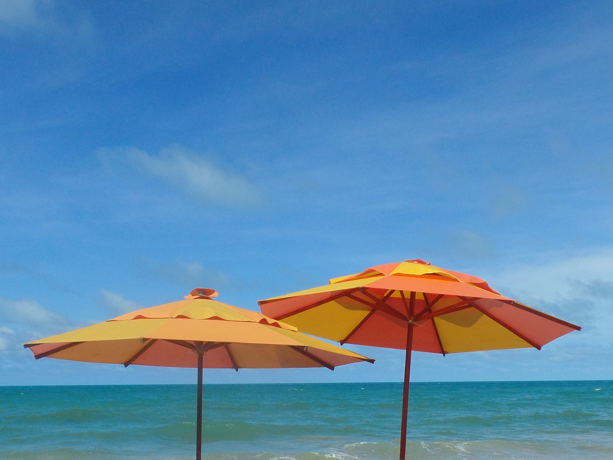
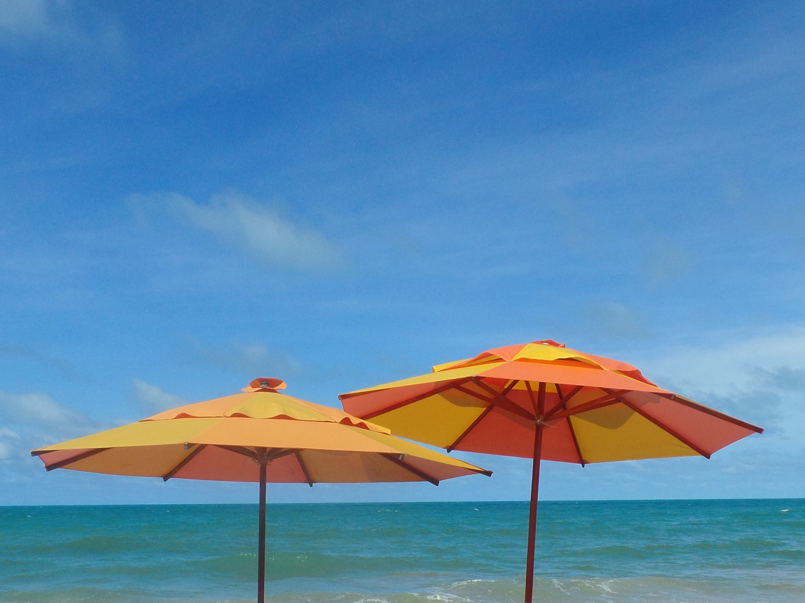

Olá, seja bem vinde!
Meu nome é Lucas Loiola, tenho 23 anos e moro na zona sul da cidade de São Paulo. Um dos meus hobbys é fotografar, e aqui você poderá acompanhar meus cliques. Neste portifólio você não encontrará imagens de um tema específico, somente momentos que quero lembrar e gravei com a lente da minha câmera, uma galeria de memórias. Fotos de pessoas, animais ou paisagens são comuns por aqui!!


 
